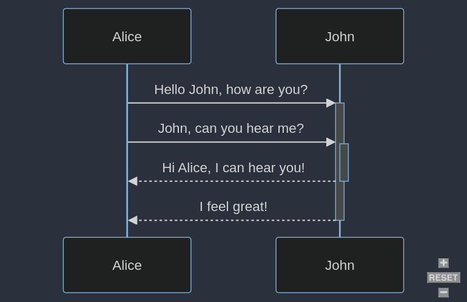
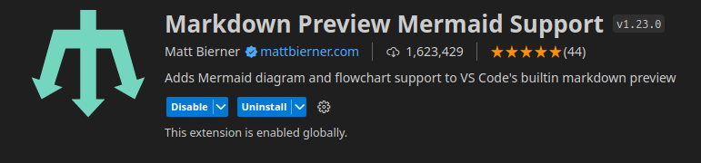
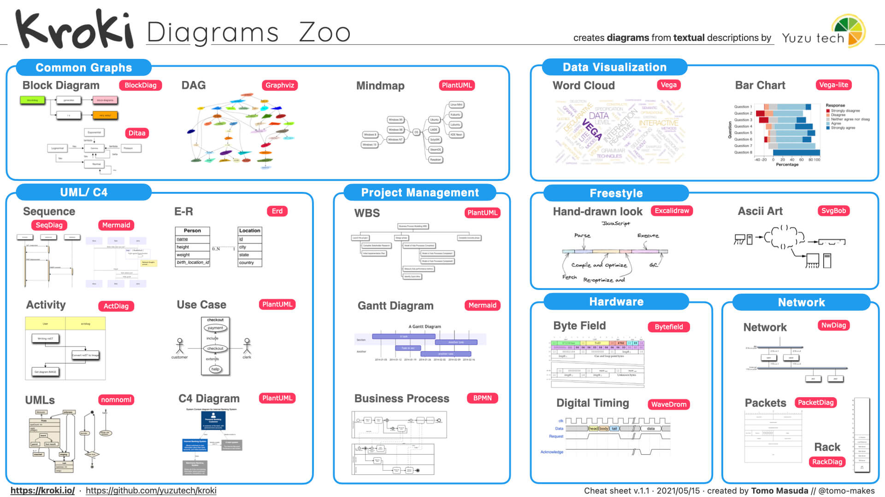

graph LR
A --- B
B-->C[fa:fa-ban forbidden]
B-->D(fa:fa-spinner)
I have been searching for a tool which can create diagrams based on declarative texts (diagram as code). A tool much like graphviz but easier to get started with and use. Two tools which fits my requirements are:
- Mermaid
- https://github.com/mermaid-js/mermaid
- https://mermaid.js.org/intro/getting-started.html
- Kroki
- https://github.com/yuzutech/kroki :
- https://kroki.io/#cheat-sheet
Mermaid
Mermaid offers plenty of charts to choose from and has a user friendly syntax. The documentation provides many examples for different diagrams and the syntax seem to be easy to learn.
There are many ways to convert the diagram definitions as described below.
Using Docker
- Using docker container can read a
.mmdfile and generate a output in the given path
docker run --rm -u `id -u`:`id -g` -v ~/Path/ToDiagramCode:/data minlag/mermaid-cli -i diagram.mmdOutput:  ### Using a HTML file In the below example from mermaid’s documentation, we define the diagram within a <pre></pre> tag and of class=mermaid.
<!DOCTYPE html>
<html lang="en">
<body>
<pre class="mermaid">
graph LR
A --- B
B-->C[fa:fa-ban forbidden]
B-->D(fa:fa-spinner);
</pre>
<script type="module">
import mermaid from 'https://cdn.jsdelivr.net/npm/mermaid@10/dist/mermaid.esm.min.mjs';
</script>
</body>
</html>This html can then be served and the DOM of the webpage is updated like so.
Using mermaid-live-editor
Online
The maintainers of mermaid have also open-sourced the live editor https://mermaid.live/ so that users can opt to run them locally. This self-hosting option is a handy option to have for users who do not want to use the hosted live-editor (although everything runs in the users browser even in the cloud version). #### Self-hosted To spin up your own instance of the live-editor use the docker/podman command.
docker run --platform linux/amd64 --publish 8000:8080 ghcr.io/mermaid-js/mermaid-live-editorTo change the port which is mapped to the container port 8080 edit --publish 8081:8080 This will then run mermaid server at https://localhost:8080
You have other options which can be customized, such as MERMAID_RENDERER_URL and MERMAID_KROKI_RENDERER_URL. Details can be found at https://github.com/mermaid-js/mermaid-live-editor
Using obsidian
An example diagram definition followed by the output (rendered within obsidian with mermaid tag). No extra community packages need to be installed within obsidian for this to work.
---
title: UiPath Reframework for Perfomer
---
stateDiagram-v2
classDef badBadEvent fill:#f00,color:white,font-weight:bold,stroke-width:2px,stroke:yellow
classDef goodEvent fill:green
[*] --> Startup
Startup --> Initialization
Initialization --> [*]: Exit on error
Initialization --> [*]: Exit if queue items < 1
Initialization --> GetTransactions
GetTransactions --> ProcessTransactions
ProcessTransactions --> Application_Exception: App Exception Count < n
ProcessTransactions --> [*]: App Exception Count > n
Application_Exception:::badBadEvent --> Initialization: App Exception Count < n
ProcessTransactions --> Business_Exception
Business_Exception:::badBadEvent --> GetTransactions: Get next queue item
ProcessTransactions --> Successful
Successful:::goodEvent --> GetTransactions: Get next queue item
GetTransactions --> [*]:No queue items
---
title: UiPath Reframework for Perfomer
---
stateDiagram-v2
classDef badBadEvent fill:#f00,color:white,font-weight:bold,stroke-width:2px,stroke:yellow
classDef goodEvent fill:green
[*] --> Startup
Startup --> Initialization
Initialization --> [*]: Exit on error
Initialization --> [*]: Exit if queue items < 1
Initialization --> GetTransactions
GetTransactions --> ProcessTransactions
ProcessTransactions --> Application_Exception: App Exception Count < n
ProcessTransactions --> [*]: App Exception Count > n
Application_Exception:::badBadEvent --> Initialization: App Exception Count < n
ProcessTransactions --> Business_Exception
Business_Exception:::badBadEvent --> GetTransactions: Get next queue item
ProcessTransactions --> Successful
Successful:::goodEvent --> GetTransactions: Get next queue item
GetTransactions --> [*]:No queue items
Using VSCode extension
Markdown Preview Mermaid Support from Matt Bierner can render any mermaid diagram definition and the UI interface allows the user to export the diagram in different image formats. 
Using Mermaid CLI
If one prefers the command line, then mermaid-cli is the official CLI by the maintainers of mermaid js. This option will require installation of additional javascript libraries, which some might want to avoid.
Installing mermaid-cli
npm install -g @mermaid-js/mermaid-cliThe below command takes in an input diagram definition and outputs the diagram file in the requured format.
mmdc -i input.mmd -o output.svgKroki
Kroki allows the user to use any of the supported drawings tools and creates a REST API endpoints which the user can integrate in their applications. The overhead of interfacing with variety of “Diagram as code” tools is avoided by using Kroki. 
Using docker
This is quite straight forward the user defines the port to be mapped. Kroki is
docker run -d -p 8000:8000 yuzutech/krokiWhat is great with kroki is provides a one-stop-shop to integrate with many tools via a REST-API. That said, the documentation of usage is somewhat lacking in my opinion.
The documentation provides ways to interact with the API for different tools: https://docs.kroki.io/kroki/setup/http-clients/